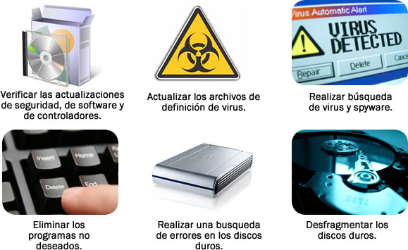

Recomendaciones
Con relación al mantenimiento preventivo, éste reduce la probabilidad de problemas en hardware y software y garantiza el correcto funcionamiento del equipo de cómputo.
Para reducir los problemas en el hardware:
- Compruebe el estado de los cables, los componentes y los periféricos.
- Limpie los componentes a fin de reducir la probabilidad de que se recalienten.
- Repare o reemplace todo componente que muestre signos de mal uso o deterioro.
Un programa de mantenimiento de hardware pudiera ser:
Para reducir los problemas en el software:
- Verifique que el software instalado esté actualizado.
- Cumpla con las políticas de la organización en el momento de instalar actualizaciones de seguridad, del sistema operativo y de programas.
- Repare o reemplace todo componente que muestre signos de mal uso o deterioro.
Muchas organizaciones no permiten realizar actualizaciones hasta que se haya llevado a cabo una evaluación exhaustiva que confirme que la actualización no causará problemas en el sistema operativo ni en el software.
Una guía para crear un programa de mantenimiento de software que se adecue a las necesidades de la computadora puede ser:
